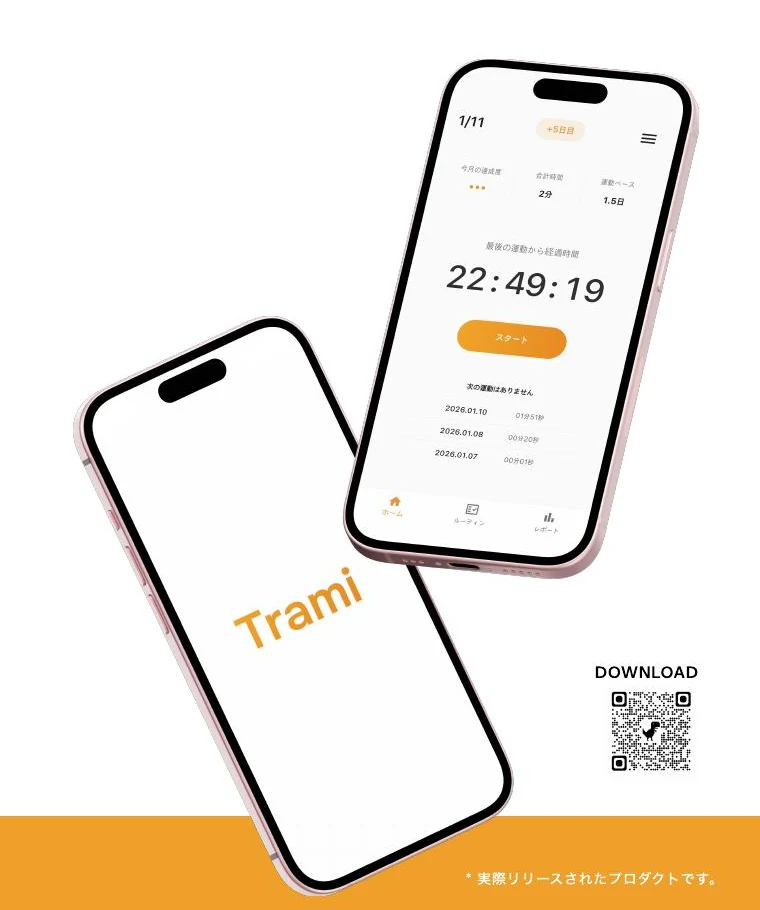
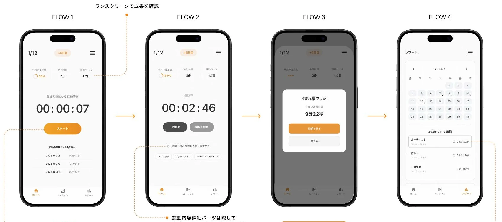
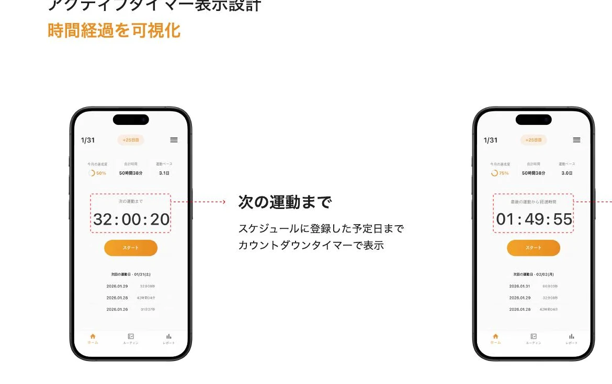

開始までのハードル
ホームで何を押せば運動を始められるのか分かりにくいと、行動する前に迷いが生まれる。
Personal Product / Released on iOS
Tramiは、複雑な機能を増やすのではなく、運動を始める、記録する、振り返るという基本行動に集中したフィットネスアプリです。

01 / Problem
運動経験または関心のある10名との会話から、継続を妨げる要因は機能不足だけではなく、開始までの迷いと記録工程の多さにあると整理しました。
ホームで何を押せば運動を始められるのか分かりにくいと、行動する前に迷いが生まれる。
入力項目と完了までの段階が多いほど、記録はモチベーションを上げる前の負担になる。
運動した事実が残っても、継続日数や次の予定との関係が見えなければ習慣を実感しにくい。
02 / Product Strategy
「何を入力するか」より先に「すぐ始められるか」を優先。開始から終了、記録確認までを一本の流れとして設計しました。
ホームの主要アクションを運動開始に集中。
運動中はタイマーと現在状態を中心に表示。
簡易記録と詳細記録を状況に応じて選択。
終了後はレポートへ移動し履歴を確認。
03 / Core Experience

ホームの主要CTAは一つだけにし、運動中は詳細入力を隠しました。終了後に記録を見るアクションを選ぶと、レポートへ自然に移動します。
Interaction Decision
ホームでは次回予定までのカウントダウン、予定がない場合は最後の運動からの経過時間を表示。継続状態を数字で確認できるようにしました。

04 / Outcome
調査、情報設計、UI、Flutter実装、Firebase連携まで担当。検証可能な主要フローを構築し、iOSアプリとしてリリースしました。
ホームの主要CTAを一つに絞り、運動開始までの判断を短くした。
計測中は補助情報を抑え、タイマーと終了操作を中心にした。
FlutterとFirebaseで記録、アカウント、設定を含む運用可能な構造にした。
継続のためのプロダクトでは、機能の多さよりも、始める瞬間と終えた後の状態設計が重要だった。
Reflection / Trami